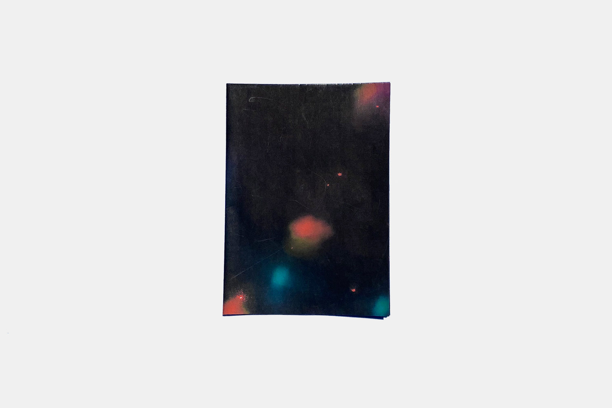

Data Collection
Folded size: 8x12"
I was given a prompt to collect data from an audience and build it into a final, printed piece. I wanted to think outside of the box and create something that blew away expectations.

I chose to collect my data in a party environment, and did so by printing large posters with authoritative questions such as “Why are you here?” “Why are you having fun?” and, simply, “Why?” I chose these questions because they were provocative, especially given the context. My goal for the questions was to gather the best, most interesting data that I could get.
I chose to represent these posters by photographing them in a dark room with disco lights dancing across the walls. It was a challenge to get the color and lighting of the photographs just right so that the responses were legible in the final printed piece. Some responses include “Parties are social, parties are political,” “F*** this,” “ “Why not?” “None of your business!” and “I don’t know.”
Unfolded size: 32x24"
I put these photographs into a large fold-out that communicated the haze of a college night-out as well as the information collected. The result is somewhat of a double image, where one can focus on the lights spread across the composition, then come closer to discover the voices and opinions of the subjects.